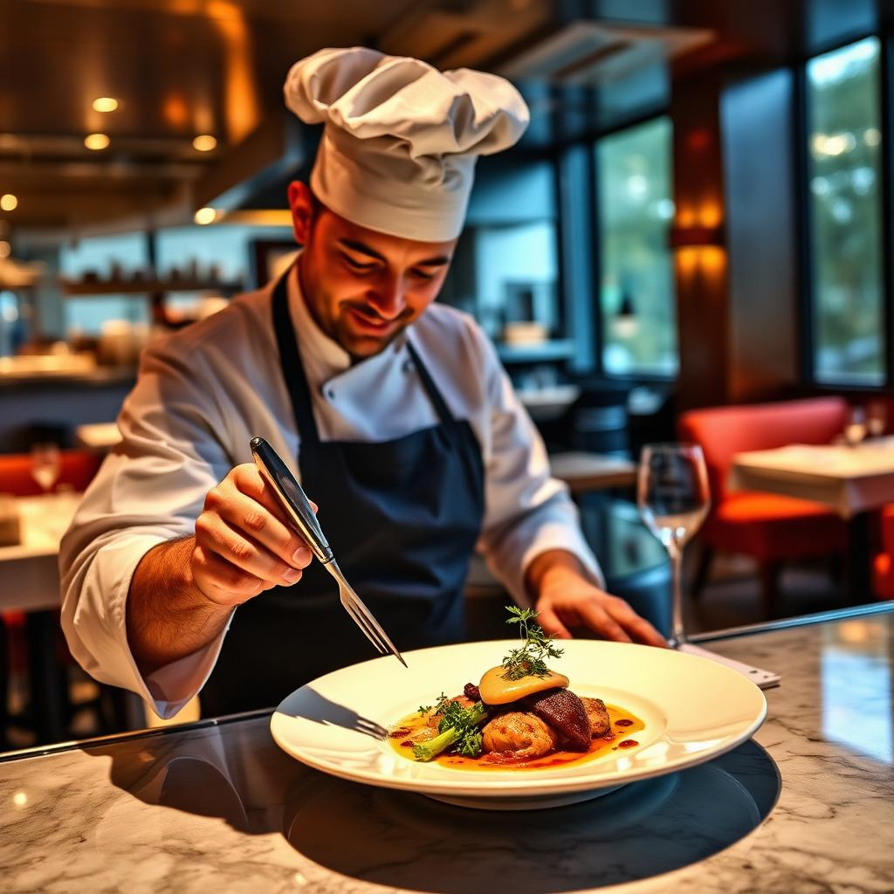

Experience fine dining
like never before
A seasonal tasting journey crafted by Chef Laurent Moreau — where
heritage technique meets the warmth of a candlelit table.

OUR STORY
A decade of devotion to the table
Maison Lumière opened its doors in 2014 with a simple promise: every plate should feel like a love letter. Chef Laurent Moreau leads our kitchen, drawing from twenty years in Lyon and Tokyo to compose menus that honor the seasons and the people who grow them.
We source from family farms within fifty miles, age our beef in-house, and bake bread twice daily. Nothing leaves our pass that we wouldn't serve to our grandmother.